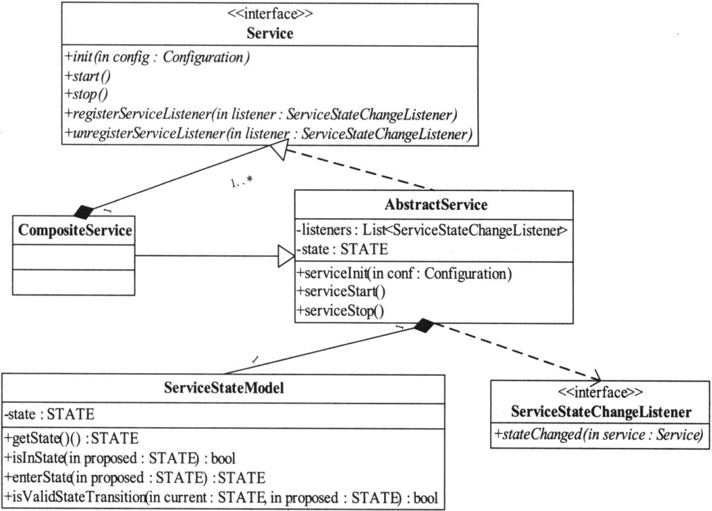
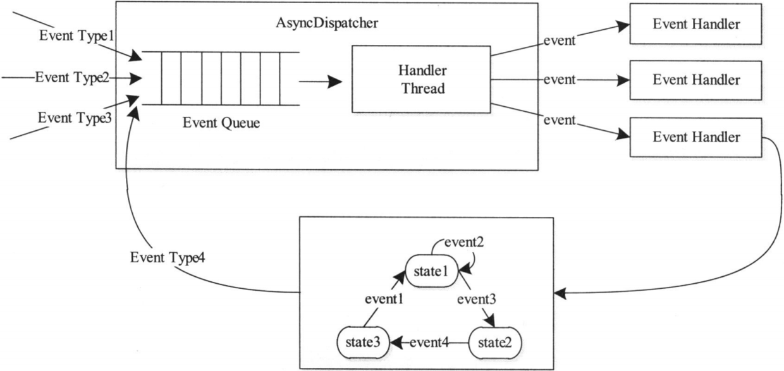
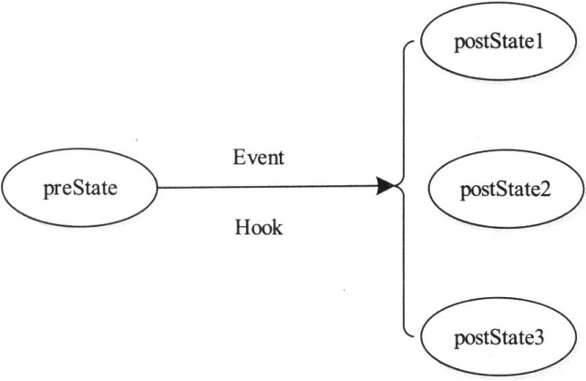
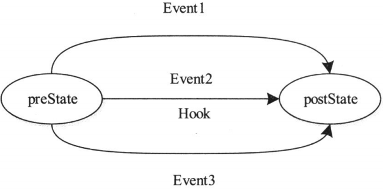

YARN基础库是其他一切模块的基础,它的设计直接决定了YARN的稳定性和扩展性,YARN借用了MRV1的一些底层基础库,比如RPC库等,但因为引入了很多新的软件设计方式,所以它的基础库更多,包括直接使用了开源序列化框架Protocol Buffers和Apache Avro,自定义的服务库、事件库和状态机等
概述
Yarn基础库是其他一切模块的基础,它的设计直接决定了Yarn的稳定性和扩展性
Yarn的基础库主要有 :
- Protocol Buffers : Protocol Buffers是Google开源的序列化库,具有平台无关,高性能,兼容好等优点.Yarn将ProtocolBuffers用到RPC通信中,默认情况下,Yarn RPC中所有参数采用Protocol Buffers进行序列化/反序列化
- Apache Avro : Avro是Hadoop生态系统中的RPC框架,具有平台无关,支持动态模式等优点,Avro的最初设计动机是解决Yarn RPC兼容性和扩展性差等问题
- RPC库 : Yarn采用MR1中的RPC库,但其中采用的默认序列化方法被替换成了Protocol Buffers
- 服务库和事件库 : Yarn将所有的对象服务化,以便统一管理(创建,销毁等),而服务之间则采用事件机制进行通信
- 状态机库 : 状态机是一种表示有限个状态以及在这些状态之间的转移和动作等行为的数学模型
Protocol Buffers
Protocol Buffers是一种轻便高效的结构化数据存储格式,可以用于结构化数据序列化/反序列化
他适合做数据存储或RPC的数据交换格式,常用作通信协议,数据存储等领域的与语言无关,平台无关,可扩展的序列化结构数据格式
相比XML格式,Protocol Buffers的优点 :
- 平台无关,语言无关
- 高性能,解析速度是XML的20 ~ 100倍
- 体积小,文件大小仅是XML的1/10 ~ 1/3
- 使用简单
- 兼容性好
Yarn中,所有的RPC函数的参数均采用Protocol Buffers定义的,Yarn的RPC协议全是使用Protocol Buffers定义(RPC协议上一章有介绍)
Apache Avro
Apache Avro是Hadoop下的一个子项目。它本身既是一个序列化框架，同时也实现了RPC的功能
Avro的特性和功能 ：
- 丰富的数据结构类型
- 快速可压缩的二进制数据形式
- 存储持久数据的文件容器
- 提供远程过程调用RPC
- 简单的动态语言结合功能
Avro具有以下特点 ：
- 支持动态模式。Avro不需要生成代码，有利于搭建通用的数据处理系统，避免了代码入侵
- 数据无需加标签
- 无需手工分配的域标识
Avro作为日志序列化库使用，在Yarn MapReduce中，所有事件的序列化/反序列化均采用Avro完成
底层通信库
HadoopRPC的解析参考我的文章Hadoop RPC机制详解
YARN提供的对外类是Yarn RPC，用户只需使用该类便可以构建一个基于HadoopRPC且采用Protocol Buffers序列化框架的通信协议
服务库与事件库
服务库
对于生命周期较长的对象,YARN采用了基于服务的对象管理模型对其进行管理,该模型主要有以下几个特点 :
- 将每个被服务化的对象分为4个状态 : NOTINITED(被创建)，INITED(已初始化)，STARTED(已启动)，STOPPED(已停止)
- 任何服务状态变化都可以触发另外一些动作
- 可通过组合的方式对任意服务进行组合，以便进行统一管理
YARN中所有的服务对象最终都实现了接口Service，它定义了最基本的服务初始化、启动、停止等操作，而AbstractService类提供了一个最基本的Service实现。
YARN中所有对象，如果是非组合服务，直接继承AbstractService类即可，否则需CompositeService。比如，对于RM而言，它是一个组合服务，它组合了各种服务对象，包括ClientRMService、ApplicationMasterLauncher、ApplicationMasterService等

YARN中，RM和NM属于组合服务，它们内部包含多个单一服务和组合服务，以实现对内部多种服务的统一管理
事件库
YARN采用了基于事件驱动的并发模型，该模型能够大大增强并发性，从而提高系统整体性能。为了构建该模型，YARN将各种处理逻辑抽象成事件和对应事件调度器，并将每类事件的处理过程分割成多个步骤，用有限状态机表示

整个处理过程大致为 ：处理请求会作为事件进入系统，由中央异步调度器(AsyncDispatcher)负责传递给相应事件调度器(Event Handler)。该事件调度器可能将该事件转发给另外一个事件调度器，也可能交给一个带有有限状态机的事件处理器，其处理结果也以事件的形式输出给中央异步调度器。而新的事件会再次被中央异步调度器转发给下一个事件调度器，直至处理完成(达到终止条件)
YARN中，所有核心服务实际上都是一个中央异步调度器，包括RM、NM和AppMaster等，它们维护了事先注册的事件与事件处理器，并根据接收的事件类型驱动服务的运行
使用YARN事件库时，通常先定义一个中央异步调度器，负责事件的转发与处理，然后根据实际业务需求定义一系列的事件与事件处理器，并注册到中央异步调度器实现事件统一管理和调度。以MRAppMaster为例，它内部包含一个中央异步调度器，并注册了TaskAttemptEvent/TaskAttemptImpl、TaskEvent/TaskImpl、JobEvent/JobImpl等一系列事件/事件处理器，由中央异步调度器统一管理和调度
服务化和事件驱动软件设计思想的引入，使得YARN具有低耦合、高内聚的特点，各个模块只需完成各自功能，而模块之间则采用事件联系起来，系统设计简单且维护方便
YARN服务库和事件库的使用
YARN服务库和事件库的使用方法，介绍一个简单的实例，该例子涉及任务和作业两种对象的事件以及一个中央异步调度器
(1) 定义Task事件
1 | public class TaskEvent extends AbstractEvent<TaskEventType> { |
(2) 定义Job事件
1 | public class JobEvent extends AbstractEvent<JobEventType> { |
(3) 事件调度器
定义一个中央异步调度器，它接收Job和Task两种类型事件，并交给对应的事件处理器处理
1 | @SuppressWarnings("unchecked") |
(4). 测试程序
1 | @SuppressWarnings("unchecked") |
事件驱动带来的变化
MRV1中，对象之间的作用关系是基于函数调用实现的，当一个对象向另外一个对象传递消息时，会直接采用函数调用的方式，且整个过程是串行的
基于函数调用的编程模型时低效的，它隐含着整个过程是串行、同步进行的。MRV2引入了事件驱动编程模型是一种更加高效的方式。
在基于事件驱动的编程模型中，所有对象被抽象成了事件处理器，而事件处理器之间通过事件相互关联。 每种事件处理器处理一种类型的事件，同时根据需要触发另外一种事件
相比于基于函数调用的编程模型，这种编程模型具有异步、并发等特点，更加高效，因此更适合大型分布式系统
状态机库
状态机由一组状态组成，这些状态分为三类：初始状态、中间状态和最终状态。状态机从初始状态开始运行，经过一系列中间状态后，到达最终状态并退出。在一个状态机中，每个状态都可以接收一组特定事件，并根据具体的事件类型转换到另一个状态。当状态机转换到最终状态时，则退出
YARN状态转换方式
YARN中，每种状态转换由一个四元组表示，分别是转换前状态(preState)、转换后状态(postState)、事件(event)和回调函数(hook)。
YARN定义了三种状态转换方式 ：
(1) 一个初始状态、一个最终状态、一种事件。该方式表示状态机在preState状态下，接收到Event事件后，执行函数状态转移函数Hook，并在执行完成后将当前状态转换为postState
(2) 一个初始状态、多个最终状态、一种事件。该方式表示状态机在preState状态下，接收到Event事件后，执行函数状态转移函数Hook，并将当前状态转移为Hook的返回值所表示的状态

(3) 一个初始状态、一个最终状态、多个事件。该方式表示状态机在preState状态下，接收到Event1、Event2和Event3中的任何一个事件，将执行函数状态转移函数Hook，并在执行完成后将当前状态转换成postState。

状态机类
YARN自己实现了一个非常简单的状态机库(位于包org.apache.hadcop.yarn.state中)。YARN对外提供了一个状态机工厂StatemachineFactory，它提供多种addTransition方法供用户添加各种状态转移，一旦状态机添加完毕后，可通过调用installTopology完成一个状态机的构建